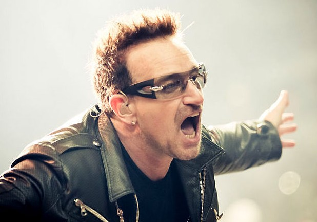
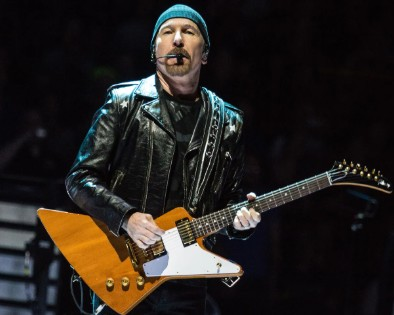
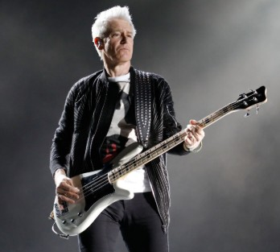
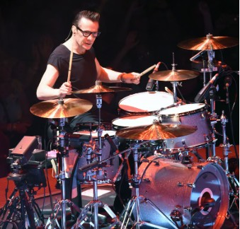

Bienvenue sur le site non-officiel de U2
Découvrez les membres, l'histoire, la discographie, les news du groupe légendaire ainsi que d'autres sites de fans.

U2 est un groupe de rock irlandais originaire de Dublin, formé en 1976.

Il est composé de BONO au chant et occasionnellement à la guitare.

THE EDGE à la guitare, au piano et au chant.

ADAM CLAYTON à la basse.

LARRY MULLEN JR. à la batterie.